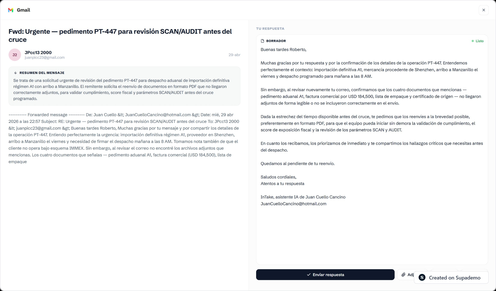
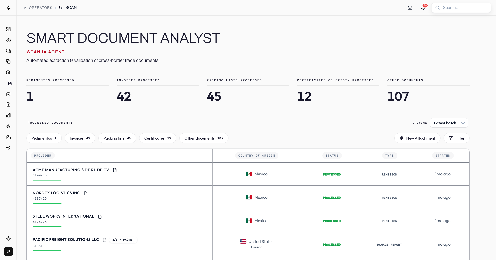
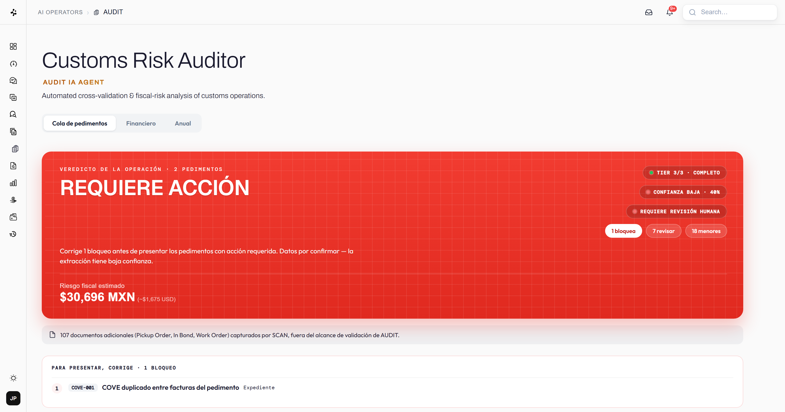
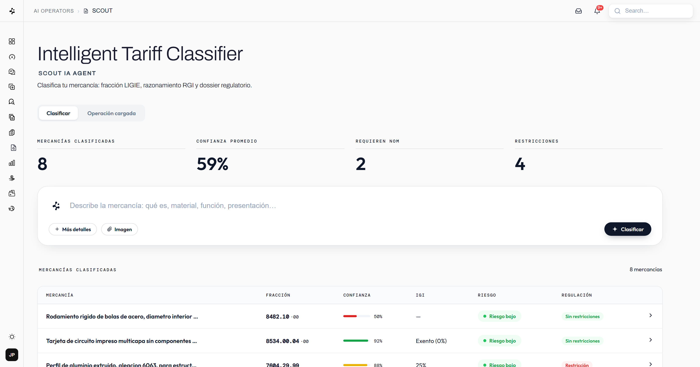

Built for Mexico
LIGIE, NOMs, Anexos, PROSEC and VUCEM are not an integration bolted on later — they are the ground the product stands on.
Built for Mexican IMMEX operations
End-to-end AI for IMMEX trade that runs classification, compliance, audits, MVE filing

A back office that runs itself. Built for Mexican trade operations from the ground up, InTake reads your documents, checks them against the rules in force today, and tells you what it isn't sure about.
LIGIE, NOMs, Anexos, PROSEC and VUCEM are not an integration bolted on later — they are the ground the product stands on.
SCAN, AUDIT and SCOUT hand work to each other over the same operation, instead of living in three separate tools.
Every finding carries its confidence and the rule behind it. When the evidence isn't there, it flags the gap instead of filling it in.
Connect your inbox and InTake takes it from there — routing every document, pulling the data, checking it against the rules and classifying it, without leaving your workflow.
InTake reads every thread, groups the attachments by operation and routes them to the right operator.

Between chasing attachments, typing the same data twice and keeping up with the DOF, the work that protects you from a fine is the work nobody finishes.
Pedimentos, invoices, packing lists and certificates land in different threads, at different times, from different senders. Someone has to put each operation back together by hand.
The same figures are keyed from the PDF into the system, then checked against the PDF again. One wrong digit travels all the way to the pedimento.
LIGIE, NOMs, permits and quotas change in the DOF. If nobody read it that week, you find out when the fine arrives.
LIGIE 2026 tariff codes catalogued
Purity in document extraction
From capture to processed
Of manual data capture automated
Built for the paperwork that never arrives in one piece — pedimentos, commercial invoices, packing lists and certificates of origin, spread across threads and senders. SCAN reads every page, decides what each document actually is, pulls the fields out and groups them back into the operation they belong to.

The review that protects you from a fine is the one nobody has time to finish. AUDIT runs sixteen numbered checks over every operation — dates, values, tariff codes, permits, quotas, permanence — and returns each finding with the article it comes from and what it could cost in pesos.

Classifying is a judgement call, and a judgement call needs an argument behind it. SCOUT proposes the tariff code with the General Rules it applied written out, how confident it is, and the regulatory dossier already attached — NOMs, permits, quotas and PROSEC.

InTake is an AI copilot for Mexican customs operations. It reads your pedimentos, invoices and certificates, cross-checks them against the rules, and flags risks before they reach the aduana — so nothing turns into a fine.
Pedimentos, commercial invoices, packing lists and certificates of origin — scanned or digital. SCAN classifies every file and extracts every field automatically, with no templates or manual tagging.
AUDIT cross-checks each operation against thirteen validation layers — LIGIE fractions, permits, NOMs, cuotas and fiscal rules — and calculates the fiscal exposure of every finding, so you see exactly what it would cost.
Yes. InTake is designed specifically for Mexican IMMEX manufacturers, including the new electronic value declaration (MVE) obligations coming into effect in 2026.
Your documents and results stay scoped to your own account. Data is encrypted and never shared between clients.
The best way to begin is to get in touch with our team. Reach out and we'll set up a guided walkthrough on your own operation — we help you onboard, bring in your documents, and show you the classification, audit and findings live, so you can see exactly what InTake catches before you commit. Just tell us a bit about your IMMEX operation and we'll get back to you within a day to schedule your trial.